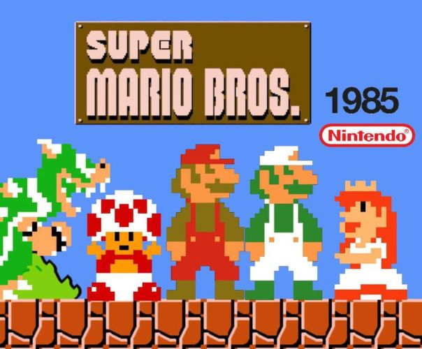
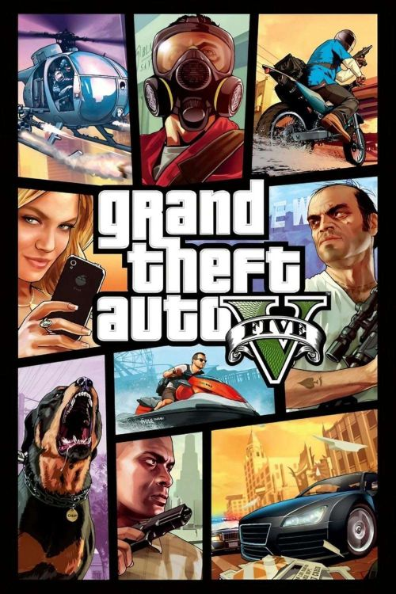
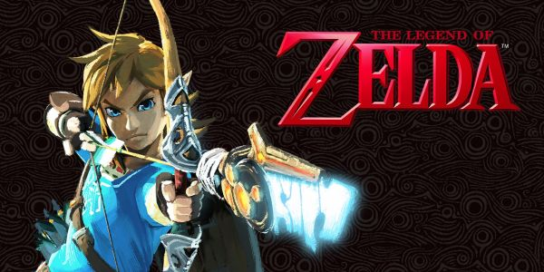

"Emociones en cada partida"
En esta sección de nuestro sitio de reseñas, nos adentramos en una colección de videojuegos que han trascendido su rol como simple
entretenimiento para convertirse en verdaderas obras que inspiran. Cada juego aquí seleccionado ofrece más que mecánicas divertidas:
transmite emociones, enseña valores, y deja una huella en quienes los juegan. Desde aventuras que hablan de la amistad y el coraje,
hasta narrativas que abordan el crecimiento personal, la pérdida o la esperanza, estos títulos nos recuerdan el poder del videojuego
como medio artístico y humano.
Acompáñanos a explorar estas experiencias interactivas que, con cada partida, nos invitan a pensar, sentir y conectar.
RESEÑA: SUPER MARIO BROS
Diseñador:
Shigeru Miyamoto
Año de lanzamiento:
1985
Plataformas:
NES (Nintendo Entertainment System) y muchas otras consolas a lo largo de los años

Portada ilustrativa del videojuego "Super Mario Bros"
Una aventura clásica que nunca pasa de moda
Desde su lanzamiento en 1985, Super Mario Bros. revolucionó el mundo de los videojuegos y marcó un antes y un después en la industria.
Desarrollado por Nintendo, este título de plataforma nos presenta a los hermanos Mario y Luigi en su misión por rescatar a la Princesa Peach del
malvado Bowser. Su jugabilidad sencilla pero desafiante, sus mundos llenos de color y su música inolvidable lo convirtieron en un clásico instantáneo.
A lo largo de los años, ha sido relanzado en múltiples plataformas, desde la NES (Nintendo Entertainment System) hasta consolas modernas como la Switch,
manteniendo su esencia intacta y ganando nuevos fanáticos generación tras generación.Más que un simple juego, Super Mario Bros representa la magia de
la aventura, la perseverancia y el deseo de superar obstáculos, todo con una sonrisa en el rostro.
Opinión:
Super Mario Bros. es mucho más que un simple videojuego de plataformas; es una obra pionera que definió las bases del género. Con su jugabilidad intuitiva,
diseño de niveles ingenioso y carismáticos personajes, se ha ganado un lugar eterno en la historia del gaming. A pesar de haber sido lanzado hace décadas,
sigue siendo tan entretenido como el primer día, demostrando que la calidad no tiene fecha de caducidad.
Un estilo que conquista por su sencillez
Visualmente, Super Mario Bros. puede parecer simple a los ojos de hoy, pero su encanto pixelado sigue intacto. Sus colores vivos, personajes carismáticos y
mundos llenos de detalles marcaron un antes y un después en la historia de los videojuegos. Su estilo retro no solo evoca nostalgia, sino que también
demuestra cómo la creatividad puede brillar con recursos limitados. Jugado en consolas clásicas o en versiones relanzadas, sigue siendo fluido, divertido y
visualmente encantador.
Recomendación:
Recomendado para todos los públicos, especialmente para quienes desean conocer los orígenes de los videojuegos modernos. Ideal tanto para jugadores veteranos
como para nuevos jugadores que quieran experimentar una joya atemporal que ha inspirado a generaciones.
Aquí puedes encontrar todas las sagas disponibles acerca de este emocionante videojuego: Videojuego Super Mario Bros
RESEÑA: GRAND THEFT AUTO V
Diseñador:
Leslie Benzies - Imran Sarwar
Año de lanzamiento:
2008
Plataformas:
PS3, PS4, PS5, Xbox 360, Xbox One, Xbox Series X/S, PC

Portada ilustrativa del videojuego "GTA V"
Sinopsis
Ambientado en la ficticia ciudad de Los Santos (inspirada en Los Ángeles), GTA V nos pone en la piel de tres protagonistas muy distintos: Michael,
un ex ladrón retirado; Franklin, un joven ambicioso que busca salir del barrio; y Trevor, un personaje impredecible y explosivo. A través de sus
historias entrelazadas, el juego explora temas como el crimen, la corrupción, la redención y la naturaleza humana, todo envuelto en un entorno
lleno de vida, caos y sátira social.
Grand Theft Auto V ofrece una de las experiencias de mundo abierto más completas y dinámicas que se han visto en los videojuegos. Puedes conducir, volar,
bucear, invertir en la bolsa, realizar misiones principales o simplemente perderte por la ciudad. Cambiar entre personajes en tiempo real añade una capa
única de estrategia y profundidad narrativa.
El modo en línea, GTA Online, expande aún más las posibilidades con contenido multijugador constante: desde atracos cooperativos hasta carreras, negocios ilegales y eventos temáticos.
Opinión:
Jugar GTA V es como estar en una película interactiva con un guion afilado, personajes memorables y momentos que sorprenden. Más allá del caos que uno puede
causar por diversión, hay una crítica social fuerte y una narrativa bien estructurada. Es un juego que permite libertad, pero también invita a reflexionar
(aunque sea entre explosiones y persecuciones).
Visualmente, aunque han pasado años desde su lanzamiento original, GTA V sigue siendo impresionante visualmente. Su mundo está meticulosamente detallado,
desde los rascacielos hasta los callejones. Las actualizaciones gráficas en consolas de nueva generación lo mantienen vigente, con mejoras en iluminación,
texturas y rendimiento.
Recomendación:
Ideal para mayores de 18 años que disfruten de mundos abiertos, tramas maduras y acción sin restricciones. Si buscas una experiencia profunda y caótica a la vez,
Grand Theft Auto V es un título esencial que sigue vigente por méritos propios.
Página oficial de GTA Grand theft auto
RESEÑA: THE LEGEND OF ZELDA: BREATH OF THE WILD
Diseñador:
Shigeru Miyamoto y Eiji Aonuma
Año de lanzamiento:
2017
Plataformas:
Nintendo Switch, Wii U

Portada ilustrativa del videojuego "The legend of zelda"
Sinopsis
En una Hyrule devastada por el paso del tiempo y la amenaza del mal ancestral conocido como Ganon, Breath of the Wild nos pone en la piel de Link,
quien despierta tras un sueño de cien años sin memoria. Su misión es simple pero profunda: recuperar su pasado y salvar al reino. La historia se
despliega de forma libre, permitiendo al jugador reconstruirla a su ritmo mientras explora.
Este título reinventó la saga y los juegos de mundo abierto. No hay caminos prefijados: el jugador puede escalar montañas, planear desde acantilados,
cocinar sus propios alimentos, resolver santuarios y enfrentarse a peligros naturales. La física y la libertad de exploración son pilares del juego,
fomentando la creatividad y la experimentación.
Opinión:
Breath of the Wild no solo redefine lo que puede ser un juego de aventuras, también conecta emocionalmente. Tiene momentos de calma, de descubrimiento,
de épica, todo acompañado de una banda sonora minimalista pero efectiva. Es un viaje que no solo se juega, se siente. Más que acción, propone contemplación.
Visualmente, con un estilo artístico que mezcla acuarela y cel shading, Breath of the Wild no busca realismo, sino belleza atemporal. Cada rincón del mapa,
desde bosques brumosos hasta ruinas desérticas transmite una sensación de melancolía y asombro. Es un juego que invita a detenerse a mirar el horizonte.
Recomendación:
Recomendado para jugadores que valoran la exploración, la narrativa ambiental y la libertad de elección. Es un título para perderse durante horas,
para descubrir sin prisas y disfrutar a cada paso. Un imprescindible para cualquier amante de los videojuegos.
Página oficial de GTA The legend of the wild